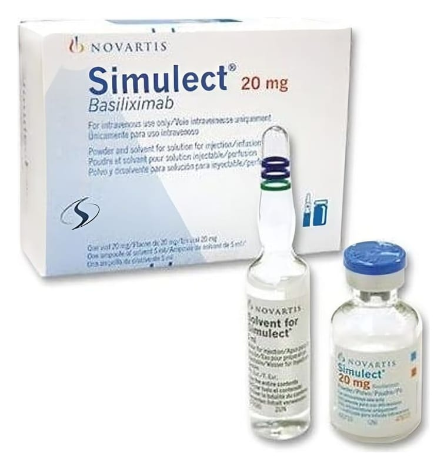

Simulect 20 mg İnfüzyon Veya Enjeksiyonluk Çözelti İçin Toz Ve Çözücü, 1 Adet

Ne için kullanılır
KT · Bölüm 1SIMULECT, intravenöz enjeksiyon ya da infüzyon için kullanılan, cam bir flakon içerisinde bulunan dondurularak kurutulmuş beyaz renkli steril bir tozdur. Her bir flakon 20 mg basiliximab adı verilen etkin maddeyi içerir. Flakon içindeki toz sulandırıldıktan sonra renksiz ve berraktan opağa değişen bir görünüm alır. SIMULECT, bağışıklık sistemini baskılayan (immünosupresan) olarak bilinen bir ilaç tipidir. Bağışıklık sistemini baskılayan ilaçlar (immünosupresanlar), vücudun “yabancı” olarak tanıdığı maddelere (örneğin nakledilen organlara) karşı yanıtını azaltır. SIMULECT, bağışıklık sisteminizin nakledilen organa saldıran ve vücudun bunu reddetmesine yol açan özel hücreler üretmesini önleyerek etki gösterir. SIMULECT, lenfosit adı verilen belirli bir beyaz kan hücresi tipine bağlanır. Bu özel lenfositler, reddetme reaksiyonunda en önemli rolü üstlenen hücrelerdir.
SIMULECT, böbrek nakli yapılan erişkinlere, ergenlere ve çocuklara verilir. İlaç, vücudun böbreği reddetme olasılığının en yüksek olduğu dönemde (böbrek naklinden sonraki ilk 4-6 hafta) nakledilmiş olan böbreğin reddinin önlenmesine yardımcı olur. Size bu süre boyunca yeni böbreğinizin korunmasına yardımcı olacak başka ilaçlar verilecek (örneğin mikroemülsiyon siklosporin) ve bu ilaçların bazılarını hastaneden çıktıktan sonra da her gün almaya devam etmeniz gerekecektir. SIMULECT, yalnızca nakil ameliyatına yakın tarihlerde verilecektir.